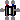
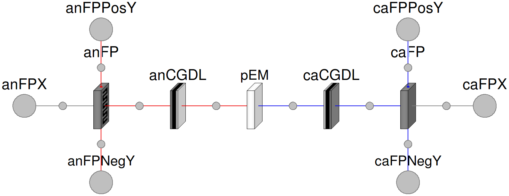
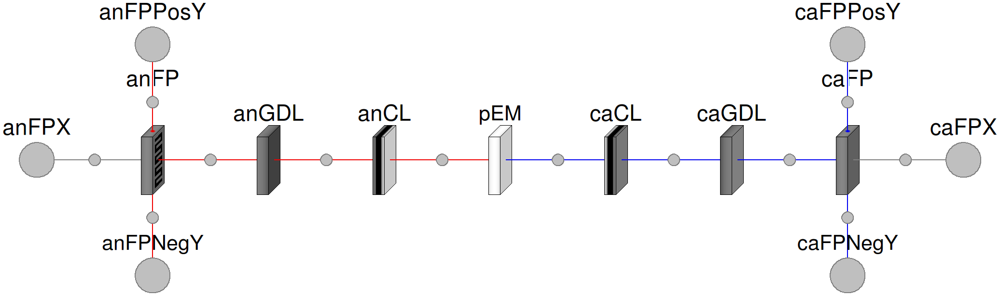

Table of Contents
- User's Guide
- Blocks
- Conditions
- Assemblies
- Regions
- Subregions
- Connectors
- Characteristics
- Units
- Quantities
- BaseClasses
Download
- Latest: FCSys-2.0.zip (**Please check back soon or contact kdavies4 at gmail.com.)

| Name | Description |
|---|---|
| Examples | |
|  Cell | Default single-cell PEMFC |
| CalibratedCell | Cell model with calibration parameters for exchange and transport |
| IntegratedCell | Baseline cell, with integrated CLs and GDLs |
| CellSSIC | Cell model with steady state initial conditions (no reaction) |

This model presents a single-cell proton exchange membrane fuel cell (PEMFC). An overview of a PEMFC is given in the top-level documentation of FCSys.
Extends from FCSys.BaseClasses.Icons.Cell (Icon for a cell).
| Type | Name | Default | Description |
|---|---|---|---|
| Geometry | |||
| Length | L_y[:] | fill(1*U.m/1, 1) | Lengths along the channel (Ly) [l] |
| Length | L_z[:] | fill(5*U.mm/1, 1) | Lengths across the channel (Lz) [l] |
| Layers | |||
| AnFP | anFP | redeclare FCSys.Regions.AnFP… | Anode flow plate |
| AnGDL | anGDL | redeclare FCSys.Regions.AnGD… | Anode gas diffusion layer |
| AnCL | anCL | redeclare FCSys.Regions.AnCL… | Anode catalyst layer |
| PEM | PEM | redeclare FCSys.Regions.PEMs… | Proton exchange membrane |
| CaCL | caCL | redeclare FCSys.Regions.CaCL… | Cathode catalyst layer |
| CaGDL | caGDL | redeclare FCSys.Regions.CaGD… | Cathode gas diffusion layer |
| CaFP | caFP | redeclare FCSys.Regions.CaFP… | Cathode flow plate |
| Type | Name | Description |
|---|---|---|
| FaceBus | anFPX[n_y, n_z] | Anode plate face |
| FaceBus | caFPX[n_y, n_z] | Cathode plate face |
| FaceBus | anFPPosY[anFP.n_x, n_z] | Positive anode flow plate face along the y axis |
| FaceBus | caFPPosY[caFP.n_x, n_z] | Positive anode flow plate face along the y axis |
| FaceBus | caFPNegY[caFP.n_x, n_z] | Negative cathode flow plate face along the y axis |
| FaceBus | anFPNegY[anFP.n_x, n_z] | Negative anode flow plate face along the y axis |
model Cell "Default single-cell PEMFC" import FCSys.BaseClasses.Utilities.average; import FCSys.BaseClasses.Utilities.cartWrap; extends FCSys.BaseClasses.Icons.Cell; // Geometric parameters parameter Q.Length L_y[:]=fill(1*U.m/1, 1) "Lengths along the channel (Ly)"; parameter Q.Length L_z[:]=fill(5*U.mm/1, 1) "Lengths across the channel (Lz)"; final parameter Integer n_y=size(L_y, 1) "Number of subregions along the channel"; final parameter Integer n_z=size(L_z, 1) "Number of subregions across the channel"; // TODO: For GM cell, use dissimilar L_y and L_z for anode, cathode, and PEM. // Essential analysis variables (x-axis electrical voltage, power, and // current) /* output Q.Potential v=average(average(anFP.subregions[1, :, :].graphite.'e-'.mu_face[ 1, 1] - caFP.subregions[caFP.n_x, :, :].graphite.'e-'.mu_face[1, 2])) "Average electrical potential (x axis)"; output Q.Power Wdot=-sum(anFP.subregions[1, :, :].graphite.'e-'.mu_face[1, 1] .* anFP.subregions[1, :, :].graphite.'e-'.Ndot_face[1, 1] + caFP.subregions[ caFP.n_x, :, :].graphite.'e-'.mu_face[1, 2] .* caFP.subregions[caFP.n_x, :, :].graphite.'e-'.Ndot_face[1, 2]) "Electrical power output (x axis)"; output Q.Current I=Wdot/v "Current"; // This is the power-effective current that would create the actual // electrical power at the average voltage (above). */ /* // Auxiliary variables (for analysis) final parameter Q.Length L[Axis](each stateSelect=StateSelect.never) = {sum( anFP.L_x) + sum(anGDL.L_x) + sum(anCL.L_x) + sum(pEM.L_x) + sum(caCL.L_x) + sum(caGDL.L_x) + sum(caFP.L_x),sum(L_y),sum(L_z)} if environment.analysis "Total lengths along the x, y, and z axes"; final parameter Q.Area A[Axis](each stateSelect=StateSelect.never) = {L[ cartWrap(ax + 2)]*L[cartWrap(ax + 2)] for ax in 1:3} if environment.analysis "Cross-sectional areas"; final parameter Q.Volume V=product(L) if environment.analysis "Volume"; output Q.Potential Deltav_x_seg[n_y, n_z](each stateSelect=StateSelect.never) = caFP.subregions[caFP.n_x, :, :].graphite.'e-'.mu_face[1, 2] - anFP.subregions[ 1, :, :].graphite.'e-'.mu_face[1, 1] if environment.analysis "Electrical potential differences of the segments (x axis)"; output Q.Power 'Wdot_e-_x'[n_y, n_z](each stateSelect=StateSelect.never) = -( anFP.subregions[1, :, :].graphite.'e-'.mu_face[1, 1] .* anFP.subregions[1, :, :].graphite.'e-'.Ndot_face[1, 1] + caFP.subregions[caFP.n_x, :, :].graphite. 'e-'.mu_face[1, 2] .* caFP.subregions[caFP.n_x, :, :].graphite.'e-'.Ndot_face[ 1, 2]) if environment.analysis "Electrical power of the segments (x axis)"; output Q.Current I_x_seg[n_y, n_z](each stateSelect=StateSelect.never) = ( caFP.subregions[caFP.n_x, :, :].graphite.'e-'.Ndot_face[1, 2] - anFP.subregions[ 1, :, :].graphite.'e-'.Ndot_face[1, 1])/2 if environment.analysis "Electrical currents of the segments (x axis)"; output Q.CurrentAreic Iprimeprime_x[n_y, n_z](each stateSelect=StateSelect.never) = {I_x_seg[i_y, i_z]/(L_y[i_y]*L_z[i_z]) for i_z in 1:n_z, i_y in 1:n_y} if environment.analysis "Areic electrical current of the segments (x axis)"; output Q.CurrentAreic Iprimeprime_x_avg(stateSelect=StateSelect.never) = I/A[1] if environment.analysis "Average areic electrical current (x axis)"; output Q.Current Ndot_H2(stateSelect=StateSelect.never) = sum(anFP.subregions[ 1, :, :].gas.H2.Ndot_face[1, 1]) + sum(anFP.subregions[:, 1, :].gas.H2.Ndot_face[ 2, 1] + anFP.subregions[:, n_y, :].gas.H2.Ndot_face[2, 2]) if environment.analysis "Rate of hydrogen intake"; output Q.Current Ndot_H2O(stateSelect=StateSelect.never) = sum(anFP.subregions[ 1, :, :].gas.H2O.Ndot_face[1, 1] + caFP.subregions[caFP.n_x, :, :].gas.H2O.Ndot_face[ 1, 2]) + sum(anFP.subregions[:, 1, :].gas.H2O.Ndot_face[1, 1] + anFP.subregions[ :, n_y, :].gas.H2O.Ndot_face[1, 2]) + sum(caFP.subregions[:, 1, :].gas.H2O.Ndot_face[ 1, 1] - caFP.subregions[:, n_y, :].gas.H2O.Ndot_face[1, 2]) if environment.analysis "Rate of water intake"; output Q.Current Ndot_O2(stateSelect=StateSelect.never) = sum(caFP.subregions[ caFP.n_x, :, :].gas.O2.Ndot_face[1, 2]) + sum(caFP.subregions[:, 1, :].gas.O2.Ndot_face[ 1, 1] - caFP.subregions[:, n_y, :].gas.O2.Ndot_face[1, 2]) if environment.analysis "Rate of oxygen intake"; */ Connectors.FaceBus anFPX[n_y, n_z] "Anode plate face"; Connectors.FaceBus caFPX[n_y, n_z] "Cathode plate face"; Connectors.FaceBus anFPPosY[anFP.n_x, n_z] "Positive anode flow plate face along the y axis"; Connectors.FaceBus caFPPosY[caFP.n_x, n_z] "Positive anode flow plate face along the y axis"; Connectors.FaceBus caFPNegY[caFP.n_x, n_z] "Negative cathode flow plate face along the y axis"; Connectors.FaceBus anFPNegY[anFP.n_x, n_z] "Negative anode flow plate face along the y axis"; replaceable FCSys.Regions.AnFPs.AnFP anFP(final L_y=L_y, final L_z=L_z) "Anode flow plate"; replaceable FCSys.Regions.AnGDLs.AnGDL anGDL(final L_y=L_y, final L_z=L_z) "Anode gas diffusion layer"; replaceable FCSys.Regions.AnCLs.AnCL anCL(final L_y=L_y, final L_z=L_z) "Anode catalyst layer"; replaceable FCSys.Regions.PEMs.PEM PEM(final L_y=L_y, final L_z=L_z) "Proton exchange membrane"; replaceable FCSys.Regions.CaCLs.CaCL caCL(final L_y=L_y, final L_z=L_z) "Cathode catalyst layer"; replaceable FCSys.Regions.CaGDLs.CaGDL caGDL(final L_y=L_y, final L_z=L_z) "Cathode gas diffusion layer"; replaceable FCSys.Regions.CaFPs.CaFP caFP(final L_y=L_y, final L_z=L_z) "Cathode flow plate"; protected outer Conditions.Environment environment "Environmental conditions"; equation // Internal connections (between layers) connect(anFP.xPositive, anGDL.xNegative); connect(anGDL.xPositive, anCL.xNegative); connect(anCL.xPositive, PEM.xNegative); connect(PEM.xPositive, caCL.xNegative); connect(caCL.xPositive, caGDL.xNegative); connect(caGDL.xPositive, caFP.xNegative); // External connections connect(anFPX, anFP.xNegative); connect(anFP.yNegative, anFPNegY); connect(anFP.yPositive, anFPPosY); connect(caFP.xPositive, caFPX); connect(caFP.yNegative, caFPNegY); connect(caFP.yPositive, caFPPosY); end Cell;
For more information, see the Cell model.
Extends from Cell (Default single-cell PEMFC).
| Type | Name | Default | Description |
|---|---|---|---|
| Geometry | |||
| Length | L_y[:] | fill(1*U.m/1, 1) | Lengths along the channel (Ly) [l] |
| Length | L_z[:] | fill(5*U.mm/1, 1) | Lengths across the channel (Lz) [l] |
| Layers | |||
| PEM | PEM | redeclare FCSys.Regions.PEMs… | Proton exchange membrane |
| Calibration factors | |||
| Exchange of translational momentum | |||
| NumberAbsolute | 'k_alpha_F_C+' | 1 | For C (kα Φ C) [1] |
| NumberAbsolute | k_alpha_tau_C19HF37O5S | 1 | For C19HF37O5S (kα Φ C19HF37O5S) [1] |
| NumberAbsolute | 'k_alpha_tau_e-' | 1 | For e- (kα Φ e-) [1] |
| NumberAbsolute | k_alpha_tau_H2 | 1 | For H2 (kα Φ H2) [1] |
| NumberAbsolute | k_alpha_tau_H2O | 1 | For H2O (kα Φ H2O) [1] |
| NumberAbsolute | 'k_alpha_tau_H+' | 1 | For H+ (kα Φ H+) [1] |
| NumberAbsolute | k_alpha_tau_N2 | 1 | For N2 (kα Φ N2) [1] |
| NumberAbsolute | k_alpha_tau_O2 | 1 | For O2 (kα Φ O2) [1] |
| Thermal exchange | |||
| NumberAbsolute | k_alpha_Qdot_C | 1 | For C (kS C) [1] |
| NumberAbsolute | k_alpha_Qdot_C19HF37O5S | 1 | For C19HF37O5S (kS C19HF37O5S) [1] |
| NumberAbsolute | 'k_alpha_Qdot_e-' | 1 | For e- (kS e-) [1] |
| NumberAbsolute | k_alpha_Qdot_H2 | 1 | For H2 (kS H2) [1] |
| NumberAbsolute | k_alpha_Qdot_H2O | 1 | For H2O (kS H2O) [1] |
| NumberAbsolute | 'k_alpha_Qdot_H+' | 1 | For H+ (kS H+) [1] |
| NumberAbsolute | k_alpha_Qdot_N2 | 1 | For N2 (kS N2) [1] |
| NumberAbsolute | k_alpha_Qdot_O2 | 1 | For O2 (kS O2) [1] |
| Material transport | |||
| NumberAbsolute | 'k_alpha_Ndot_e-' | 1 | For e- (kα Ṅ e-) [1] |
| NumberAbsolute | k_alpha_Ndot_H2 | 1 | For H2 (kα Ṅ H2) [1] |
| NumberAbsolute | k_alpha_Ndot_H2O | 1 | For H2O (kα Ṅ H2O) [1] |
| NumberAbsolute | 'k_alpha_Ndot_H+' | 1 | For H+ (kα Ṅ H+) [1] |
| NumberAbsolute | k_alpha_Ndot_N2 | 1 | For N2 (kα Ṅ N2) [1] |
| NumberAbsolute | k_alpha_Ndot_O2 | 1 | For O2 (kα Ṅ O2) [1] |
| Type | Name | Description |
|---|---|---|
| FaceBus | anFPX[n_y, n_z] | Anode plate face |
| FaceBus | caFPX[n_y, n_z] | Cathode plate face |
| FaceBus | anFPPosY[anFP.n_x, n_z] | Positive anode flow plate face along the y axis |
| FaceBus | caFPPosY[caFP.n_x, n_z] | Positive anode flow plate face along the y axis |
| FaceBus | caFPNegY[caFP.n_x, n_z] | Negative cathode flow plate face along the y axis |
| FaceBus | anFPNegY[anFP.n_x, n_z] | Negative anode flow plate face along the y axis |
model CalibratedCell "Cell model with calibration parameters for exchange and transport" import FCSys.Subregions.Species; // Exchange of translational momentum parameter Q.NumberAbsolute 'k_alpha_F_C+'( final min=0, final nominal=1) = 1 "For C (kα Φ C)"; parameter Q.NumberAbsolute k_alpha_tau_C19HF37O5S( final min=0, final nominal=1) = 1 "For C19HF37O5S (kα Φ C19HF37O5S)"; parameter Q.NumberAbsolute 'k_alpha_tau_e-'( final min=0, final nominal=1) = 1 "For e- (kα Φ e-)"; parameter Q.NumberAbsolute k_alpha_tau_H2( final min=0, final nominal=1) = 1 "For H2 (kα Φ H2)"; parameter Q.NumberAbsolute k_alpha_tau_H2O( final min=0, final nominal=1) = 1 "For H2O (kα Φ H2O)"; parameter Q.NumberAbsolute 'k_alpha_tau_H+'( final min=0, final nominal=1) = 1 "For H+ (kα Φ H+)"; parameter Q.NumberAbsolute k_alpha_tau_N2( final min=0, final nominal=1) = 1 "For N2 (kα Φ N2)"; parameter Q.NumberAbsolute k_alpha_tau_O2( final min=0, final nominal=1) = 1 "For O2 (kα Φ O2)"; // Thermal exchange parameter Q.NumberAbsolute k_alpha_Qdot_C( final min=0, final nominal=1) = 1 "For C (kS C)"; parameter Q.NumberAbsolute k_alpha_Qdot_C19HF37O5S( final min=0, final nominal=1) = 1 "For C19HF37O5S (kS C19HF37O5S)"; parameter Q.NumberAbsolute 'k_alpha_Qdot_e-'( final min=0, final nominal=1) = 1 "For e- (kS e-)"; parameter Q.NumberAbsolute k_alpha_Qdot_H2( final min=0, final nominal=1) = 1 "For H2 (kS H2)"; parameter Q.NumberAbsolute k_alpha_Qdot_H2O( final min=0, final nominal=1) = 1 "For H2O (kS H2O)"; parameter Q.NumberAbsolute 'k_alpha_Qdot_H+'( final min=0, final nominal=1) = 1 "For H+ (kS H+)"; parameter Q.NumberAbsolute k_alpha_Qdot_N2( final min=0, final nominal=1) = 1 "For N2 (kS N2)"; parameter Q.NumberAbsolute k_alpha_Qdot_O2( final min=0, final nominal=1) = 1 "For O2 (kS O2)"; // Material transport /* parameter Q.NumberAbsolute 'k_alpha_beta_C+'( final min=0, final nominal=1) = 1 "For C (kα Ṅ C)" annotation (Dialog(tab="Calibration factors", group="Material transport")); parameter Q.NumberAbsolute 'k_alpha_beta_C+'19HF37O5S-( final min=0, final nominal=1) = 1 "For C19HF37O5S (kα Ṅ C19HF37O5S-)" annotation (Dialog(tab="Calibration factors", group="Material transport")); */ parameter Q.NumberAbsolute 'k_alpha_Ndot_e-'( final min=0, final nominal=1) = 1 "For e- (kα Ṅ e-)"; parameter Q.NumberAbsolute k_alpha_Ndot_H2( final min=0, final nominal=1) = 1 "For H2 (kα Ṅ H2)"; parameter Q.NumberAbsolute k_alpha_Ndot_H2O( final min=0, final nominal=1) = 1 "For H2O (kα Ṅ H2O)"; parameter Q.NumberAbsolute 'k_alpha_Ndot_H+'( final min=0, final nominal=1) = 1 "For H+ (kα Ṅ H+)"; parameter Q.NumberAbsolute k_alpha_Ndot_N2( final min=0, final nominal=1) = 1 "For N2 (kα Ṅ N2)"; parameter Q.NumberAbsolute k_alpha_Ndot_O2( final min=0, final nominal=1) = 1 "For O2 (kα Ṅ O2)"; // Transport of translational momentum /* parameter Q.NumberAbsolute 'k_alpha_F_C+'( final min=0, final nominal=1) = 1 "For C (kΦ C)" annotation (Dialog(tab="Calibration factors", group="Transport of translational momentum")) ; parameter Q.NumberAbsolute 'k_alpha_F_C+'19HF37O5S-( final min=0, final nominal=1) = 1 "For C19HF37O5S (kΦ C19HF37O5S-)" annotation (Dialog(tab="Calibration factors", group="Transport of translational momentum")) ; */ // Thermal transport extends Cell( anFP(subregions(each gas( redeclare Species.H2.Gas.Calibrated H2( final k_alpha_tau=k_alpha_tau_H2, final k_alpha_Qdot=k_alpha_Qdot_H2, final k_alpha_Ndot=k_alpha_Ndot_H2, final k_alpha_tau=k_alpha_tau_H2, final k_alpha_Qdot=k_alpha_Qdot_H2), redeclare Species.H2O.Gas.Calibrated H2O( final k_alpha_tau=k_alpha_tau_H2O, final k_alpha_Qdot=k_alpha_Qdot_H2O, final k_alpha_Ndot=k_alpha_Ndot_H2O, final k_alpha_tau=k_alpha_tau_H2O, final k_alpha_Qdot=k_alpha_Qdot_H2O), redeclare Species.N2.Gas.Calibrated N2( final k_alpha_tau=k_alpha_tau_N2, final k_alpha_Qdot=k_alpha_Qdot_N2, final k_alpha_Ndot=k_alpha_Ndot_N2, final k_alpha_tau=k_alpha_tau_N2, final k_alpha_Qdot=k_alpha_Qdot_N2), redeclare Species.O2.Gas.Calibrated O2( final k_alpha_tau=k_alpha_tau_O2, final k_alpha_Qdot=k_alpha_Qdot_O2, final k_alpha_Ndot=k_alpha_Ndot_O2, final k_alpha_tau=k_alpha_tau_O2, final k_alpha_Qdot=k_alpha_Qdot_O2)), each graphite(redeclare Species.C.Graphite.Calibrated C( final k_alpha_tau=k_alpha_tau_C, final k_alpha_Qdot=k_alpha_Qdot_C, final k_alpha_Qdot=k_alpha_Qdot_C), redeclare Species.'e-'.solid.Calibrated 'e-'( final k_alpha_tau='k_alpha_tau_e-', final k_alpha_Qdot='k_alpha_Qdot_e-', final k_alpha_Ndot='k_alpha_Ndot_e-', final k_alpha_tau='k_alpha_tau_e-', final k_alpha_Qdot='k_alpha_Qdot_e-')))), anGDL(subregions(each gas( redeclare Species.H2.Gas.Calibrated H2( final k_alpha_tau=k_alpha_tau_H2, final k_alpha_Qdot=k_alpha_Qdot_H2, final k_alpha_Ndot=k_alpha_Ndot_H2, final k_alpha_tau=k_alpha_tau_H2, final k_alpha_Qdot=k_alpha_Qdot_H2), redeclare Species.H2O.Gas.Calibrated H2O( final k_alpha_tau=k_alpha_tau_H2O, final k_alpha_Qdot=k_alpha_Qdot_H2O, final k_alpha_Ndot=k_alpha_Ndot_H2O, final k_alpha_tau=k_alpha_tau_H2O, final k_alpha_Qdot=k_alpha_Qdot_H2O), redeclare Species.N2.Gas.Calibrated N2( final k_alpha_tau=k_alpha_tau_N2, final k_alpha_Qdot=k_alpha_Qdot_N2, final k_alpha_Ndot=k_alpha_Ndot_N2, final k_alpha_tau=k_alpha_tau_N2, final k_alpha_Qdot=k_alpha_Qdot_N2), redeclare Species.O2.Gas.Calibrated O2( final k_alpha_tau=k_alpha_tau_O2, final k_alpha_Qdot=k_alpha_Qdot_O2, final k_alpha_Ndot=k_alpha_Ndot_O2, final k_alpha_tau=k_alpha_tau_O2, final k_alpha_Qdot=k_alpha_Qdot_O2)), each graphite(redeclare Species.C.Graphite.Calibrated C( final k_alpha_tau=k_alpha_tau_C, final k_alpha_Qdot=k_alpha_Qdot_C, final k_alpha_Qdot=k_alpha_Qdot_C), redeclare Species.'e-'.solid.Calibrated 'e-'( final k_alpha_tau='k_alpha_tau_e-', final k_alpha_Qdot='k_alpha_Qdot_e-', final k_alpha_Ndot='k_alpha_Ndot_e-', final k_alpha_tau='k_alpha_tau_e-', final k_alpha_Qdot='k_alpha_Qdot_e-')))), anCL(subregions( each gas( redeclare Species.H2.Gas.Calibrated H2( final k_alpha_tau=k_alpha_tau_H2, final k_alpha_Qdot=k_alpha_Qdot_H2, final k_alpha_Ndot=k_alpha_Ndot_H2, final k_alpha_tau=k_alpha_tau_H2, final k_alpha_Qdot=k_alpha_Qdot_H2), redeclare Species.H2O.Gas.Calibrated H2O( final k_alpha_tau=k_alpha_tau_H2O, final k_alpha_Qdot=k_alpha_Qdot_H2O, final k_alpha_Ndot=k_alpha_Ndot_H2O, final k_alpha_tau=k_alpha_tau_H2O, final k_alpha_Qdot=k_alpha_Qdot_H2O), redeclare Species.N2.Gas.Calibrated N2( final k_alpha_tau=k_alpha_tau_N2, final k_alpha_Qdot=k_alpha_Qdot_N2, final k_alpha_Ndot=k_alpha_Ndot_N2, final k_alpha_tau=k_alpha_tau_N2, final k_alpha_Qdot=k_alpha_Qdot_N2), redeclare Species.O2.Gas.Calibrated O2( final k_alpha_tau=k_alpha_tau_O2, final k_alpha_Qdot=k_alpha_Qdot_O2, final k_alpha_Ndot=k_alpha_Ndot_O2, final k_alpha_tau=k_alpha_tau_O2, final k_alpha_Qdot=k_alpha_Qdot_O2)), each graphite(redeclare Species.C.Graphite.Calibrated C( final k_alpha_tau=k_alpha_tau_C, final k_alpha_Qdot=k_alpha_Qdot_C, final k_alpha_Qdot=k_alpha_Qdot_C), redeclare Species.'e-'.solid.Calibrated 'e-'( final k_alpha_tau='k_alpha_tau_e-', final k_alpha_Qdot='k_alpha_Qdot_e-', final k_alpha_Ndot='k_alpha_Ndot_e-', final k_alpha_tau='k_alpha_tau_e-', final k_alpha_Qdot='k_alpha_Qdot_e-')), each ionomer( redeclare Species.C19HF37O5S.Solid.Calibrated C19HF37O5S( final k_alpha_tau=k_alpha_tau_C19HF37O5S, final k_alpha_Qdot=k_alpha_Qdot_C19HF37O5S, final k_alpha_Qdot=k_alpha_Qdot_C19HF37O5S), redeclare Species.H2O.Gas.Calibrated H2O( final k_alpha_tau=k_alpha_tau_H2O, final k_alpha_Qdot=k_alpha_Qdot_H2O, final k_alpha_Ndot=k_alpha_Ndot_H2O, final k_alpha_tau=k_alpha_tau_H2O, final k_alpha_Qdot=k_alpha_Qdot_H2O), redeclare Species.'H+'.Solid.Calibrated 'H+'( final k_alpha_tau='k_alpha_tau_H+', final k_alpha_Qdot='k_alpha_Qdot_H+', final k_alpha_Ndot='k_alpha_Ndot_H+', final k_alpha_tau='k_alpha_tau_H+', final k_alpha_Qdot='k_alpha_Qdot_H+')))), pEM(subregions(each gas( redeclare Species.H2.Gas.Calibrated H2( final k_alpha_tau=k_alpha_tau_H2, final k_alpha_Qdot=k_alpha_Qdot_H2, final k_alpha_Ndot=k_alpha_Ndot_H2, final k_alpha_tau=k_alpha_tau_H2, final k_alpha_Qdot=k_alpha_Qdot_H2), redeclare Species.H2O.Gas.Calibrated H2O( final k_alpha_tau=k_alpha_tau_H2O, final k_alpha_Qdot=k_alpha_Qdot_H2O, final k_alpha_Ndot=k_alpha_Ndot_H2O, final k_alpha_tau=k_alpha_tau_H2O, final k_alpha_Qdot=k_alpha_Qdot_H2O), redeclare Species.N2.Gas.Calibrated N2( final k_alpha_tau=k_alpha_tau_N2, final k_alpha_Qdot=k_alpha_Qdot_N2, final k_alpha_Ndot=k_alpha_Ndot_N2, final k_alpha_tau=k_alpha_tau_N2, final k_alpha_Qdot=k_alpha_Qdot_N2), redeclare Species.O2.Gas.Calibrated O2( final k_alpha_tau=k_alpha_tau_O2, final k_alpha_Qdot=k_alpha_Qdot_O2, final k_alpha_Ndot=k_alpha_Ndot_O2, final k_alpha_tau=k_alpha_tau_O2, final k_alpha_Qdot=k_alpha_Qdot_O2)), each ionomer( redeclare Species.C19HF37O5S.Solid.Calibrated C19HF37O5S( final k_alpha_tau=k_alpha_tau_C19HF37O5S, final k_alpha_Qdot=k_alpha_Qdot_C19HF37O5S, final k_alpha_Qdot=k_alpha_Qdot_C19HF37O5S), redeclare Species.H2O.Gas.Calibrated H2O( final k_alpha_tau=k_alpha_tau_H2O, final k_alpha_Qdot=k_alpha_Qdot_H2O, final k_alpha_Ndot=k_alpha_Ndot_H2O, final k_alpha_tau=k_alpha_tau_H2O, final k_alpha_Qdot=k_alpha_Qdot_H2O), redeclare Species.'H+'.Solid.Calibrated 'H+'( final k_alpha_tau='k_alpha_tau_H+', final k_alpha_Qdot='k_alpha_Qdot_H+', final k_alpha_Ndot='k_alpha_Ndot_H+', final k_alpha_tau='k_alpha_tau_H+', final k_alpha_Qdot='k_alpha_Qdot_H+')))), caCL(subregions( each gas( redeclare Species.H2.Gas.Calibrated H2( final k_alpha_tau=k_alpha_tau_H2, final k_alpha_Qdot=k_alpha_Qdot_H2, final k_alpha_Ndot=k_alpha_Ndot_H2, final k_alpha_tau=k_alpha_tau_H2, final k_alpha_Qdot=k_alpha_Qdot_H2), redeclare Species.H2O.Gas.Calibrated H2O( final k_alpha_tau=k_alpha_tau_H2O, final k_alpha_Qdot=k_alpha_Qdot_H2O, final k_alpha_Ndot=k_alpha_Ndot_H2O, final k_alpha_tau=k_alpha_tau_H2O, final k_alpha_Qdot=k_alpha_Qdot_H2O), redeclare Species.N2.Gas.Calibrated N2( final k_alpha_tau=k_alpha_tau_N2, final k_alpha_Qdot=k_alpha_Qdot_N2, final k_alpha_Ndot=k_alpha_Ndot_N2, final k_alpha_tau=k_alpha_tau_N2, final k_alpha_Qdot=k_alpha_Qdot_N2), redeclare Species.O2.Gas.Calibrated O2( final k_alpha_tau=k_alpha_tau_O2, final k_alpha_Qdot=k_alpha_Qdot_O2, final k_alpha_Ndot=k_alpha_Ndot_O2, final k_alpha_tau=k_alpha_tau_O2, final k_alpha_Qdot=k_alpha_Qdot_O2)), each graphite(redeclare Species.C.Graphite.Calibrated C( final k_alpha_tau=k_alpha_tau_C, final k_alpha_Qdot=k_alpha_Qdot_C, final k_alpha_Qdot=k_alpha_Qdot_C), redeclare Species.'e-'.solid.Calibrated 'e-'( final k_alpha_tau='k_alpha_tau_e-', final k_alpha_Qdot='k_alpha_Qdot_e-', final k_alpha_Ndot='k_alpha_Ndot_e-', final k_alpha_tau='k_alpha_tau_e-', final k_alpha_Qdot='k_alpha_Qdot_e-')), each ionomer( redeclare Species.C19HF37O5S.Solid.Calibrated C19HF37O5S( final k_alpha_tau=k_alpha_tau_C19HF37O5S, final k_alpha_Qdot=k_alpha_Qdot_C19HF37O5S, final k_alpha_Qdot=k_alpha_Qdot_C19HF37O5S), redeclare Species.H2O.Gas.Calibrated H2O( final k_alpha_tau=k_alpha_tau_H2O, final k_alpha_Qdot=k_alpha_Qdot_H2O, final k_alpha_Ndot=k_alpha_Ndot_H2O, final k_alpha_tau=k_alpha_tau_H2O, final k_alpha_Qdot=k_alpha_Qdot_H2O), redeclare Species.'H+'.Solid.Calibrated 'H+'( final k_alpha_tau='k_alpha_tau_H+', final k_alpha_Qdot='k_alpha_Qdot_H+', final k_alpha_Ndot='k_alpha_Ndot_H+', final k_alpha_tau='k_alpha_tau_H+', final k_alpha_Qdot='k_alpha_Qdot_H+')))), caGDL(subregions(each gas( redeclare Species.H2.Gas.Calibrated H2( final k_alpha_tau=k_alpha_tau_H2, final k_alpha_Qdot=k_alpha_Qdot_H2, final k_alpha_Ndot=k_alpha_Ndot_H2, final k_alpha_tau=k_alpha_tau_H2, final k_alpha_Qdot=k_alpha_Qdot_H2), redeclare Species.H2O.Gas.Calibrated H2O( final k_alpha_tau=k_alpha_tau_H2O, final k_alpha_Qdot=k_alpha_Qdot_H2O, final k_alpha_Ndot=k_alpha_Ndot_H2O, final k_alpha_tau=k_alpha_tau_H2O, final k_alpha_Qdot=k_alpha_Qdot_H2O), redeclare Species.N2.Gas.Calibrated N2( final k_alpha_tau=k_alpha_tau_N2, final k_alpha_Qdot=k_alpha_Qdot_N2, final k_alpha_Ndot=k_alpha_Ndot_N2, final k_alpha_tau=k_alpha_tau_N2, final k_alpha_Qdot=k_alpha_Qdot_N2), redeclare Species.O2.Gas.Calibrated O2( final k_alpha_tau=k_alpha_tau_O2, final k_alpha_Qdot=k_alpha_Qdot_O2, final k_alpha_Ndot=k_alpha_Ndot_O2, final k_alpha_tau=k_alpha_tau_O2, final k_alpha_Qdot=k_alpha_Qdot_O2)), each graphite(redeclare Species.C.Graphite.Calibrated C( final k_alpha_tau=k_alpha_tau_C, final k_alpha_Qdot=k_alpha_Qdot_C, final k_alpha_Qdot=k_alpha_Qdot_C), redeclare Species.'e-'.solid.Calibrated 'e-'( final k_alpha_tau='k_alpha_tau_e-', final k_alpha_Qdot='k_alpha_Qdot_e-', final k_alpha_Ndot='k_alpha_Ndot_e-', final k_alpha_tau='k_alpha_tau_e-', final k_alpha_Qdot='k_alpha_Qdot_e-')))), caFP(subregions(each gas( redeclare Species.H2.Gas.Calibrated H2( final k_alpha_tau=k_alpha_tau_H2, final k_alpha_Qdot=k_alpha_Qdot_H2, final k_alpha_Ndot=k_alpha_Ndot_H2, final k_alpha_tau=k_alpha_tau_H2, final k_alpha_Qdot=k_alpha_Qdot_H2), redeclare Species.H2O.Gas.Calibrated H2O( final k_alpha_tau=k_alpha_tau_H2O, final k_alpha_Qdot=k_alpha_Qdot_H2O, final k_alpha_Ndot=k_alpha_Ndot_H2O, final k_alpha_tau=k_alpha_tau_H2O, final k_alpha_Qdot=k_alpha_Qdot_H2O), redeclare Species.N2.Gas.Calibrated N2( final k_alpha_tau=k_alpha_tau_N2, final k_alpha_Qdot=k_alpha_Qdot_N2, final k_alpha_Ndot=k_alpha_Ndot_N2, final k_alpha_tau=k_alpha_tau_N2, final k_alpha_Qdot=k_alpha_Qdot_N2), redeclare Species.O2.Gas.Calibrated O2( final k_alpha_tau=k_alpha_tau_O2, final k_alpha_Qdot=k_alpha_Qdot_O2, final k_alpha_Ndot=k_alpha_Ndot_O2, final k_alpha_tau=k_alpha_tau_O2, final k_alpha_Qdot=k_alpha_Qdot_O2)), each graphite(redeclare Species.C.Graphite.Calibrated C( final k_alpha_tau=k_alpha_tau_C, final k_alpha_Qdot=k_alpha_Qdot_C, final k_alpha_Qdot=k_alpha_Qdot_C), redeclare Species.'e-'.solid.Calibrated 'e-'( final k_alpha_tau='k_alpha_tau_e-', final k_alpha_Qdot='k_alpha_Qdot_e-', final k_alpha_Ndot='k_alpha_Ndot_e-', final k_alpha_tau='k_alpha_tau_e-', final k_alpha_Qdot='k_alpha_Qdot_e-'))))); end CalibratedCell;

See the Cell model.
Extends from FCSys.BaseClasses.Icons.Cell (Icon for a cell).
| Type | Name | Default | Description |
|---|---|---|---|
| Geometry | |||
| Length | L_y[:] | fill(1*U.m/1, 1) | Lengths along the channel (Ly) [l] |
| Length | L_z[:] | fill(5*U.mm/1, 1) | Lengths across the channel (Lz) [l] |
| Layers | |||
| AnFP | anFP | redeclare FCSys.Regions.AnFP… | Anode flow plate |
| AnCGDL | anCGDL | redeclare Regions.AnCLs.AnCG… | Anode catalyst/gas diffusion layer |
| PEM | PEM | redeclare FCSys.Regions.PEMs… | PEM |
| CaCGDL | caCGDL | redeclare Regions.CaCLs.CaCG… | Cathode catalyst/gas diffusion layer |
| CaFP | caFP | redeclare FCSys.Regions.CaFP… | Cathode flow plate |
| Type | Name | Description |
|---|---|---|
| FaceBus | anFPX[n_y, n_z] | Anode plate face |
| FaceBus | caFPX[n_y, n_z] | Cathode plate face |
| FaceBus | anFPPosY[anFP.n_x, n_z] | Positive anode flow plate face along the y axis |
| FaceBus | caFPPosY[caFP.n_x, n_z] | Positive anode flow plate face along the y axis |
| FaceBus | caFPNegY[caFP.n_x, n_z] | Negative cathode flow plate face along the y axis |
| FaceBus | anFPNegY[anFP.n_x, n_z] | Negative anode flow plate face along the y axis |
model IntegratedCell "Baseline cell, with integrated CLs and GDLs" import FCSys.BaseClasses.Utilities.cartWrap; extends FCSys.BaseClasses.Icons.Cell; // Geometric parameters parameter Q.Length L_y[:]=fill(1*U.m/1, 1) "Lengths along the channel (Ly)"; parameter Q.Length L_z[:]=fill(5*U.mm/1, 1) "Lengths across the channel (Lz)"; final parameter Integer n_y=size(L_y, 1) "Number of regions along the channel"; final parameter Integer n_z=size(L_z, 1) "Number of regions across the channel"; // **Update these outputs based on Cell model. // Auxiliary variables (for analysis) final parameter Q.Length L[Axis]={sum(anFP.L_x) + sum(anCGDL.L_x) + sum(pEM.L_x) + sum(caCGDL.L_x) + sum(caFP.L_x),sum(L_y),sum(L_z)} if environment.analysis "Total lengths along the x, y, and z axes"; final parameter Q.Area A[Axis]={L[cartWrap(ax + 2)]*L[cartWrap(ax + 2)] for ax in 1:3} if environment.analysis "Cross-sectional areas"; final parameter Q.Volume V=product(L) if environment.analysis "Volume"; output Q.Potential Deltav_x[n_y, n_z](each stateSelect=StateSelect.never) = caFP.subregions[caFP.n_x, :, :].graphite.'e-'.mu_face[1, 2] - anFP.subregions[ 1, :, :].graphite.'e-'.mu_face[1, 1] if environment.analysis "Electrical potential differences of the segments (x axis)"; output Q.Power 'Wdot_e-_x'[n_y, n_z](each stateSelect=StateSelect.never) = anFP.subregions[1, :, :].graphite.'e-'.Ndot_face[1, 1] .* anFP.subregions[1, :, :].graphite.'e-'.mu_face[1, 1] + caFP.subregions[caFP.n_x, :, :].graphite. 'e-'.Ndot_face[1, 2] .* caFP.subregions[caFP.n_x, :, :].graphite.'e-'.mu_face[ 1, 2] if environment.analysis "Rates of intake of electrical energy of the segments (x axis)"; output Q.Current I_x[n_y, n_z](each stateSelect=StateSelect.never) = (caFP.subregions[ caFP.n_x, :, :].graphite.'e-'.Ndot_face[1, 2] - anFP.subregions[1, :, :].graphite. 'e-'.Ndot_face[1, 1])/2 if environment.analysis "Electrical currents of the segments (x axis)"; output Q.Current I_x_tot(stateSelect=StateSelect.never) = sum(I_x) if environment.analysis "Total electrical current (x axis)"; output Q.CurrentAreic Iprimeprime_x[n_y, n_z](each stateSelect=StateSelect.never) = {I_x[i_y, i_z]/(L_y[i_y]*L_z[i_z]) for i_z in 1:n_z, i_y in 1:n_y} if environment.analysis "Areic electrical current of the segments (x axis)"; output Q.CurrentAreic Iprimeprime_x_avg(stateSelect=StateSelect.never) = I_x_tot/A[1] if environment.analysis "Average areic electrical current (x axis)"; output Q.Current Ndot_H2(stateSelect=StateSelect.never) = sum(anFP.subregions[ 1, :, :].gas.H2.Ndot_face[1, 1]) + sum(anFP.subregions[:, 1, :].gas.H2.Ndot_face[ 2, 1] + anFP.subregions[:, n_y, :].gas.H2.Ndot_face[2, 2]) if environment.analysis "Rate of hydrogen intake"; output Q.Current Ndot_H2O(stateSelect=StateSelect.never) = sum(anFP.subregions[ 1, :, :].gas.H2O.Ndot_face[1, 1] + caFP.subregions[caFP.n_x, :, :].gas.H2O.Ndot_face[ 1, 2]) + sum(anFP.subregions[:, 1, :].gas.H2O.Ndot_face[1, 1] + anFP.subregions[ :, n_y, :].gas.H2O.Ndot_face[1, 2]) + sum(caFP.subregions[:, 1, :].gas.H2O.Ndot_face[ 1, 1] - caFP.subregions[:, n_y, :].gas.H2O.Ndot_face[1, 2]) if environment.analysis "Rate of water intake"; output Q.Current Ndot_O2(stateSelect=StateSelect.never) = sum(caFP.subregions[ caFP.n_x, :, :].gas.O2.Ndot_face[1, 2]) + sum(caFP.subregions[:, 1, :].gas.O2.Ndot_face[ 1, 1] - caFP.subregions[:, n_y, :].gas.O2.Ndot_face[1, 2]) if environment.analysis "Rate of oxygen intake"; output Q.Power 'Wdot_e-'(stateSelect=StateSelect.never) = sum('Wdot_e-_x') + sum(anFP.subregions[:, 1, :].graphite.'e-'.Ndot_face[2, 1] .* anFP.subregions[ :, 1, :].graphite.'e-'.mu_face[2, 1] + anFP.subregions[:, n_y, :].graphite. 'e-'.Ndot_face[2, 2] .* anFP.subregions[:, n_y, :].graphite.'e-'.mu_face[2, 2]) + sum(caFP.subregions[:, 1, :].graphite.'e-'.Ndot_face[2, 1] .* caFP.subregions[ :, 1, :].graphite.'e-'.mu_face[2, 1] + caFP.subregions[:, n_y, :].graphite. 'e-'.Ndot_face[2, 2] .* caFP.subregions[:, n_y, :].graphite.'e-'.mu_face[2, 2]) if environment.analysis "Rate of electrical work (negative for work done)"; Connectors.FaceBus anFPX[n_y, n_z] "Anode plate face"; Connectors.FaceBus caFPX[n_y, n_z] "Cathode plate face"; Connectors.FaceBus anFPPosY[anFP.n_x, n_z] "Positive anode flow plate face along the y axis"; Connectors.FaceBus caFPPosY[caFP.n_x, n_z] "Positive anode flow plate face along the y axis"; Connectors.FaceBus caFPNegY[caFP.n_x, n_z] "Negative cathode flow plate face along the y axis"; Connectors.FaceBus anFPNegY[anFP.n_x, n_z] "Negative anode flow plate face along the y axis"; replaceable FCSys.Regions.AnFPs.AnFP anFP(final L_y=L_y, final L_z=L_z) "Anode flow plate"; replaceable Regions.AnCLs.AnCGDL anCGDL(final L_y=L_y, final L_z=L_z) "Anode catalyst/gas diffusion layer"; replaceable FCSys.Regions.PEMs.PEM PEM(final L_y=L_y,final L_z=L_z) "PEM"; replaceable Regions.CaCLs.CaCGDL caCGDL(final L_y=L_y, final L_z=L_z) "Cathode catalyst/gas diffusion layer"; replaceable FCSys.Regions.CaFPs.CaFP caFP(final L_y=L_y,final L_z=L_z) "Cathode flow plate"; protected outer FCSys.Conditions.Environment environment "Environmental properties and settings"; equation // Internal connections (between layers) connect(anFP.xPositive, anCGDL.xNegative); connect(anCGDL.xPositive, PEM.xNegative); connect(PEM.xPositive, caCGDL.xNegative); connect(caCGDL.xPositive, caFP.xNegative); // External connections connect(anFPX, anFP.xNegative); connect(caFP.xPositive, caFPX); connect(anFP.yPositive, anFPPosY); connect(caFP.yPositive, caFPPosY); connect(caFP.yNegative, caFPNegY); connect(anFPNegY, anFP.yNegative); end IntegratedCell;

| Type | Name | Default | Description |
|---|---|---|---|
| Geometry | |||
| Length | L_y[:] | fill(1*U.m/1, 1) | Lengths along the channel (Ly) [l] |
| Length | L_z[:] | fill(5*U.mm/1, 1) | Lengths across the channel (Lz) [l] |
| Layers | |||
| PEM | PEM | redeclare FCSys.Regions.PEMs… | Proton exchange membrane |
| Type | Name | Description |
|---|---|---|
| FaceBus | anFPX[n_y, n_z] | Anode plate face |
| FaceBus | caFPX[n_y, n_z] | Cathode plate face |
| FaceBus | anFPPosY[anFP.n_x, n_z] | Positive anode flow plate face along the y axis |
| FaceBus | caFPPosY[caFP.n_x, n_z] | Positive anode flow plate face along the y axis |
| FaceBus | caFPNegY[caFP.n_x, n_z] | Negative cathode flow plate face along the y axis |
| FaceBus | anFPNegY[anFP.n_x, n_z] | Negative anode flow plate face along the y axis |
model CellSSIC "Cell model with steady state initial conditions (no reaction)" extends Cell( anFP(subregions(each graphite('e-'(initMaterial=InitScalar.None)))), anGDL(subregions(each graphite('e-'(initMaterial=InitScalar.None)))), anCL(subregions(each graphite('e-'(final Ndot_IC=0, final initMaterial= InitScalar.ReactionRate)), each ionomer('H+'(initMaterial= InitScalar.None)))), pEM(subregions(each ionomer('H+'(final initMaterial=InitScalar.None)))), caCL(subregions(each ionomer('H+'(initMaterial=InitScalar.Amount)))), caGDL(subregions(each graphite('e-'(final initMaterial=InitScalar.None)))), caFP(subregions(each graphite('e-'(final initMaterial=InitScalar.None))))); initial equation // Equipotential anCL.subregions.graphite.'e-'.mu = anGDL.subregions.graphite.'e-'.mu; anFP.subregions.graphite.'e-'.mu = anGDL.subregions.graphite.'e-'.mu; anCL.subregions.ionomer.'H+'.mu = pEM.subregions.ionomer.'H+'.mu; pEM.subregions.ionomer.'H+'.mu = caCL.subregions.ionomer.'H+'.mu; caCL.subregions.graphite.'e-'.mu = caGDL.subregions.graphite.'e-'.mu; caFP.subregions.graphite.'e-'.mu = caGDL.subregions.graphite.'e-'.mu; end CellSSIC;